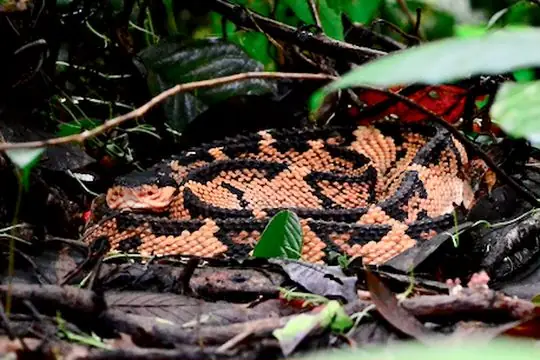
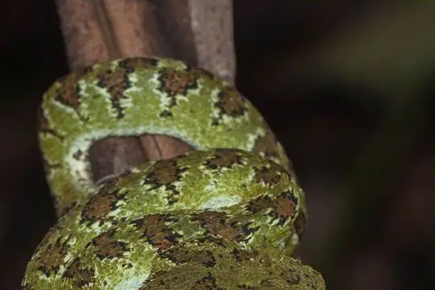
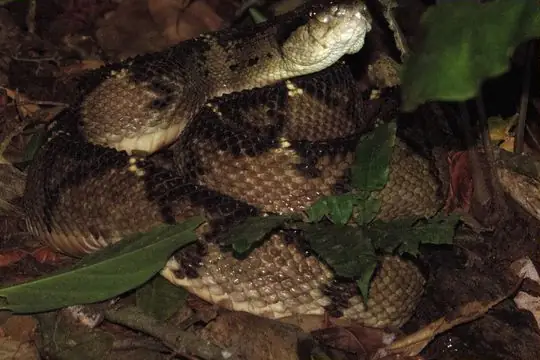
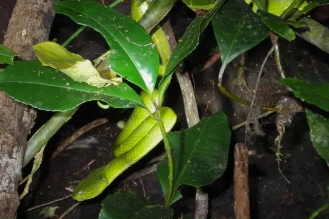
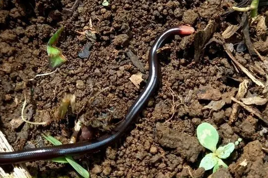
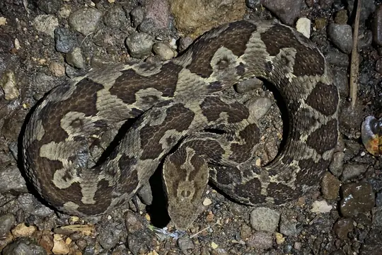
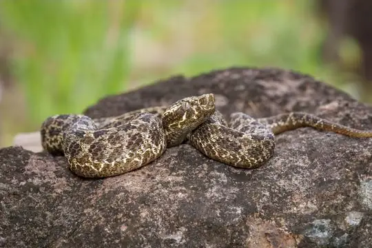
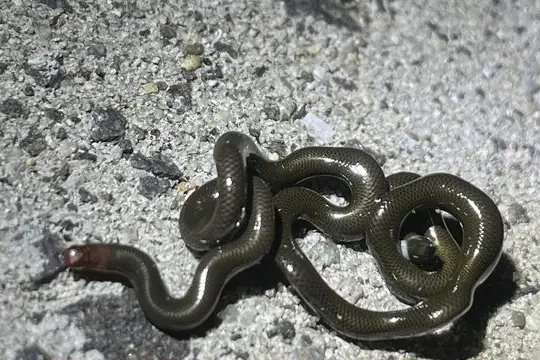

Snakes of Panama
150 living snake species are recorded in Panama in SnakeList: 25 venomous and 125 non-venomous, from 6 families.
- 150living species
- 25venomous
- 125non-venomous
- 6families
These totals count the unique living snake species SnakeList records in Panama. A species counts if it is recorded anywhere in the country, so not every snake lives in every part of it.
Species
Showing 150 species
 Adorned Graceful Brown SnakeRhadinaea decorata
Adorned Graceful Brown SnakeRhadinaea decorata Allen's Coral SnakeMicrurus alleni
Allen's Coral SnakeMicrurus alleni- No photo yetAltos de Pacora Earth SnakeGeophis bellus
 American Snail-eaterDipsas articulata
American Snail-eaterDipsas articulata Argus Snail SuckerSibon argus
Argus Snail SuckerSibon argus Banded Cat-eyed Snake (annulata)Leptodeira annulata
Banded Cat-eyed Snake (annulata)Leptodeira annulata Banded Centipede SnakeTantilla supracincta
Banded Centipede SnakeTantilla supracincta- No photo yetBarbour's Centipede SnakeTantilla albiceps
 Barbour's Tropical Ground SnakeTrimetopon barbouri
Barbour's Tropical Ground SnakeTrimetopon barbouri- No photo yetBarred Forest RacerDendrophidion vinitor
 Big-scaled Blind SnakeTrilepida macrolepis
Big-scaled Blind SnakeTrilepida macrolepis Black MilksnakeLampropeltis micropholis
Black MilksnakeLampropeltis micropholis
Black-headed BushmasterLachesis melanocephala Black-headed Snake (melanocephala)Tantilla melanocephala
Black-headed Snake (melanocephala)Tantilla melanocephala Black-speckled Palm Pit ViperBothriechis nigroviridis
Black-speckled Palm Pit ViperBothriechis nigroviridis
Blotched Palm-PitviperBothriechis supraciliaris- No photo yetBocourt's Snail-eaterDipsas viguieri
 Boulenger's Centipede SnakeTantilla alticola
Boulenger's Centipede SnakeTantilla alticola Brown Rainbow BoaEpicrates maurus
Brown Rainbow BoaEpicrates maurus Brown VinesnakeOxybelis aeneus
Brown VinesnakeOxybelis aeneus Canopy Snail-eating SnakeSibon canopy
Canopy Snail-eating SnakeSibon canopy Capuchin Coral SnakeMicrurus dumerilii
Capuchin Coral SnakeMicrurus dumerilii Central America Lizard EaterMastigodryas alternatus
Central America Lizard EaterMastigodryas alternatus
Central American BushmasterLachesis stenophrys Central American Indigo SnakeDrymarchon melanurus
Central American Indigo SnakeDrymarchon melanurus Central American Jumping Pit ViperMetlapilcoatlus mexicanus
Central American Jumping Pit ViperMetlapilcoatlus mexicanus Central American Tree SnakeImantodes gemmistratus
Central American Tree SnakeImantodes gemmistratus Chicken SnakeSpilotes pullatus
Chicken SnakeSpilotes pullatus Chocoan BushmasterLachesis acrochorda
Chocoan BushmasterLachesis acrochorda Chocoan Forest Pit ViperBothrops punctatus
Chocoan Forest Pit ViperBothrops punctatus Chucantí Centipede SnakeTantilla berguidoi
Chucantí Centipede SnakeTantilla berguidoi Clark's Coral SnakeMicrurus clarki
Clark's Coral SnakeMicrurus clarki Clark's Forest RacerDendrophidion clarkii
Clark's Forest RacerDendrophidion clarkii Clark's Ground SnakeAtractus clarki
Clark's Ground SnakeAtractus clarki Coal SnakePseudoboa neuwiedii
Coal SnakePseudoboa neuwiedii
Coffee Palm ViperBothriechis lateralis Colombian BoaBoa imperator
Colombian BoaBoa imperator Colombian Earth Snake (brachycephalus)Geophis brachycephalus
Colombian Earth Snake (brachycephalus)Geophis brachycephalus Colombian Longtail SnakeEnuliophis sclateri
Colombian Longtail SnakeEnuliophis sclateri- No photo yetCommon Graceful Brown SnakeRhadinaea pulveriventris
 Common Neckband SnakeScaphiodontophis venustissimus
Common Neckband SnakeScaphiodontophis venustissimus Cope's Coffee SnakeNinia psephota
Cope's Coffee SnakeNinia psephota Cope's False Coral SnakePliocercus euryzonus
Cope's False Coral SnakePliocercus euryzonus Cope's Forest RacerDendrophidion paucicarinatum
Cope's Forest RacerDendrophidion paucicarinatum Cope's Parrot SnakeLeptophis depressirostris
Cope's Parrot SnakeLeptophis depressirostris Cope's Tropical Ground SnakeTrimetopon pliolepis
Cope's Tropical Ground SnakeTrimetopon pliolepis Cope's Vine SnakeOxybelis brevirostris
Cope's Vine SnakeOxybelis brevirostris Copper Parrot SnakeLeptophis cupreus
Copper Parrot SnakeLeptophis cupreus
Costa Rica Blind SnakeHelminthophis frontalis Costa Rica Coffee SnakeNinia celata
Costa Rica Coffee SnakeNinia celata Costa Rica Montane PitviperCerrophidion sasai
Costa Rica Montane PitviperCerrophidion sasai Costa Rica Water SnakeHydromorphus concolor
Costa Rica Water SnakeHydromorphus concolor Costa Rican Coral SnakeMicrurus mosquitensis
Costa Rican Coral SnakeMicrurus mosquitensis Costa Rican Glasstail SnakeUrotheca pachyura
Costa Rican Glasstail SnakeUrotheca pachyura Costa Rican SnaileaterSibon lamari
Costa Rican SnaileaterSibon lamari Degenhardt's Scorpion-eating SnakeStenorrhina degenhardtii
Degenhardt's Scorpion-eating SnakeStenorrhina degenhardtii Despax's Parrot SnakeLeptophis riveti
Despax's Parrot SnakeLeptophis riveti DiCaprio’s Snail-eating SnakeSibon irmelindicaprioae
DiCaprio’s Snail-eating SnakeSibon irmelindicaprioae DormilonaCorallus ruschenbergerii
DormilonaCorallus ruschenbergerii Double-banded Coral Snake MimicErythrolamprus bizona
Double-banded Coral Snake MimicErythrolamprus bizona- No photo yetDunn's Water SnakeHydromorphus dunni
 Ecuador Frog-eating SnakeDiaphorolepis wagneri
Ecuador Frog-eating SnakeDiaphorolepis wagneri Ecuador SipoChironius grandisquamis
Ecuador SipoChironius grandisquamis Equatorial MussuranaClelia equatoriana
Equatorial MussuranaClelia equatoriana Esmarald RacerDrymobius rhombifer
Esmarald RacerDrymobius rhombifer False Fer-de-lanceXenodon rabdocephalus
False Fer-de-lanceXenodon rabdocephalus False Tree CoralRhinobothryum bovallii
False Tree CoralRhinobothryum bovallii Fer-de-lanceBothrops asper
Fer-de-lanceBothrops asper Fiddle-string SnakeImantodes cenchoa
Fiddle-string SnakeImantodes cenchoa Godman's Earth SnakeGeophis godmani
Godman's Earth SnakeGeophis godmani Godman's Graceful Brown SnakeRhadinella godmani
Godman's Graceful Brown SnakeRhadinella godmani Godman's Montane Pit ViperCerrophidion godmani
Godman's Montane Pit ViperCerrophidion godmani Green Vine Snake (fulgidus)Oxybelis fulgidus
Green Vine Snake (fulgidus)Oxybelis fulgidus Guatemala Neckband SnakeScaphiodontophis annulatus
Guatemala Neckband SnakeScaphiodontophis annulatus Hallowell's Coffee SnakeNinia atrata
Hallowell's Coffee SnakeNinia atrata Hidden Snail-eating SnakeDipsas aparatiritos
Hidden Snail-eating SnakeDipsas aparatiritos Hoffmann's Earth SnakeGeophis hoffmanni
Hoffmann's Earth SnakeGeophis hoffmanni Hognosed Pit ViperPorthidium nasutum
Hognosed Pit ViperPorthidium nasutum- No photo yetJoan's SnakeConiophanes joanae
- No photo yetLa Loma Earth SnakeGeophis tectus
 Lansberg's Hognosed Pit ViperPorthidium lansbergii
Lansberg's Hognosed Pit ViperPorthidium lansbergii Lined Ground SnakeLygophis lineatus
Lined Ground SnakeLygophis lineatus Linnaeus' SipoChironius exoletus
Linnaeus' SipoChironius exoletus Litter SnakeTantilla reticulata
Litter SnakeTantilla reticulata Mangrove Cat-eyed SnakeLeptodeira rubricata
Mangrove Cat-eyed SnakeLeptodeira rubricata Many-banded Coral SnakeMicrurus multifasciatus
Many-banded Coral SnakeMicrurus multifasciatus Mexican Blind SnakeAnomalepis mexicana
Mexican Blind SnakeAnomalepis mexicana Mimic False Coral SnakeErythrolamprus mimus
Mimic False Coral SnakeErythrolamprus mimus Mocquard's Swamp SnakeTretanorhinus mocquardi
Mocquard's Swamp SnakeTretanorhinus mocquardi Mussurana (clelia)Clelia clelia
Mussurana (clelia)Clelia clelia Neotropical Whip SnakeMasticophis mentovarius
Neotropical Whip SnakeMasticophis mentovarius- No photo yetNichols' Tree SnakeDipsas nicholsi
 Northern Calico SnakeOxyrhopus occipitalis
Northern Calico SnakeOxyrhopus occipitalis Oliver's Parrot Snake (nebulosus)Leptophis nebulosus
Oliver's Parrot Snake (nebulosus)Leptophis nebulosus Orangebelly Swamp SnakeTretanorhinus nigroluteus
Orangebelly Swamp SnakeTretanorhinus nigroluteus Ornate Cat-eyed SnakeLeptodeira ornata
Ornate Cat-eyed SnakeLeptodeira ornata Pacific Longtail SnakeEnulius flavitorques
Pacific Longtail SnakeEnulius flavitorques Pale Ground SnakeUrotheca decipiens
Pale Ground SnakeUrotheca decipiens Panamanian Dwarf BoaUngaliophis panamensis
Panamanian Dwarf BoaUngaliophis panamensis Panamenian Coral SnakeMicrurus stewarti
Panamenian Coral SnakeMicrurus stewarti- No photo yetPanamenian Earth SnakeGeophis championi
 Phantasma Tree SnakeImantodes phantasma
Phantasma Tree SnakeImantodes phantasma
Picado's Pit ViperAtropoides picadoi Plee's Tropical RacerMastigodryas pleii
Plee's Tropical RacerMastigodryas pleii Puffing SnakePhrynonax poecilonotus
Puffing SnakePhrynonax poecilonotus Pygmy Coral SnakeMicrurus dissoleucus
Pygmy Coral SnakeMicrurus dissoleucus Red-headed GlasstailUrotheca fulviceps
Red-headed GlasstailUrotheca fulviceps Redtail Coral SnakeMicrurus mipartitus
Redtail Coral SnakeMicrurus mipartitus Regal Coral SnakeMicrurus ancoralis
Regal Coral SnakeMicrurus ancoralis Ringed Snail SuckerSibon annulatus
Ringed Snail SuckerSibon annulatus Ringed Tree BoaCorallus annulatus
Ringed Tree BoaCorallus annulatus Rough Coffee SnakeNothopsis rugosus
Rough Coffee SnakeNothopsis rugosus Rufous-headed Crown SnakeTantilla ruficeps
Rufous-headed Crown SnakeTantilla ruficeps Rustyhead SnakeAmastridium veliferum
Rustyhead SnakeAmastridium veliferum Salmon-bellied RacerMastigodryas melanolomus
Salmon-bellied RacerMastigodryas melanolomus- No photo yetSargent's Graceful Brown SnakeRhadinaea sargenti
 Shropshire's Puffing SnakePhrynonax shropshirei
Shropshire's Puffing SnakePhrynonax shropshirei Sipo (flavopictus)Chironius flavopictus
Sipo (flavopictus)Chironius flavopictus Slevin's Tropical Ground SnakeTrimetopon slevini
Slevin's Tropical Ground SnakeTrimetopon slevini South American Forest RacerDendrophidion percarinatum
South American Forest RacerDendrophidion percarinatum Speckled RacerDrymobius margaritiferus
Speckled RacerDrymobius margaritiferus Spotted Coffee SnakeNinia maculata
Spotted Coffee SnakeNinia maculata Stejneger's Snail SuckerSibon longifrenis
Stejneger's Snail SuckerSibon longifrenis Striped GlasstailUrotheca guentheri
Striped GlasstailUrotheca guentheri Striped Vine SnakeOxybelis vittatus
Striped Vine SnakeOxybelis vittatus Talamanca Forest RacerDendrophidion crybelum
Talamanca Forest RacerDendrophidion crybelum Talamancan Earth SnakeGeophis talamancae
Talamancan Earth SnakeGeophis talamancae Taylor's SnaileaterDipsas tenuissima
Taylor's SnaileaterDipsas tenuissima Temporal Snail-eaterDipsas temporalis
Temporal Snail-eaterDipsas temporalis Thick Graceful Brown SnakeRhadinaea calligaster
Thick Graceful Brown SnakeRhadinaea calligaster Tropical Flat SnakeSiphlophis compressus
Tropical Flat SnakeSiphlophis compressus Troschel's Pampas SnakePhimophis guianensis
Troschel's Pampas SnakePhimophis guianensis Two-spotted SnakeConiophanes bipunctatus
Two-spotted SnakeConiophanes bipunctatus
Ujarran Hognose ViperPorthidium volcanicum- No photo yetVermiculate Graceful Brown SnakeRhadinaea vermiculaticeps
 Western Tree SnakeImantodes inornatus
Western Tree SnakeImantodes inornatus
Whitenose Blind SnakeLiotyphlops albirostris Yellowbelly SnakeConiophanes fissidens
Yellowbelly SnakeConiophanes fissidens- No photo yetAtractus darienensis
- No photo yetAtractus depressiocellus
- No photo yetAtractus hostilitractus
 Atractus imperfectus
Atractus imperfectus Dendrophidion apharocybe
Dendrophidion apharocybe- No photo yetEpictia pauldwyeri
- No photo yetErythrolamprus epinephelus
 Leptodeira rhombifera
Leptodeira rhombifera Metlapilcoatlus borealis
Metlapilcoatlus borealis- No photo yetSibon noalamina
- No photo yetSibon perissostichon
 Tantilla armillata
Tantilla armillata
No snakes in Panama match.
Panama’s snakes in numbers
- Families: Colubridae 115, Viperidae 16, Elapidae 9, Boidae 5, Anomalepididae 3, Leptotyphlopidae 2.
- 21 are recorded in no other country or territory in SnakeList: Altos de Pacora Earth Snake, Barbour's Centipede Snake, Canopy Snail-eating Snake, Chucantí Centipede Snake, Dunn's Water Snake, Ecuador Frog-eating Snake, Hidden Snail-eating Snake, Joan's Snake, La Loma Earth Snake, Nichols' Tree Snake, Panamenian Coral Snake, Panamenian Earth Snake and 9 more.
How precisely they are recorded
Of the 150 living species recorded in Panama, 87 are recorded by province in SnakeList’s data; 63 are recorded only for Panama as a whole, so the province pages list them as possible rather than recorded. SnakeList records each species by province, not by exact spot, so a species listed for a province may live in only part of it.
Provinces
The provinces where SnakeList records snakes, with how many living species are recorded in each. Each page has its species, venomous snakes, families, the species found only there, its cities and neighbours.
- Chiriquí 44 species
- Coclé 34 species
- Colón 25 species
- comarca Ngäbe-Buglé 25 species
- Darién 23 species
- Emberá-Wounaan Comarca 1 species
- Guna Yala 12 species
- Herrera 11 species
- Los Santos 14 species
- Ngöbe-Buglé Comarca 5 species
- Panamá 61 species
- Veraguas 27 species
No place matches that.
Cities
Its biggest cities, biggest first. SnakeList records snakes by province, not by city, so each city page shows the species recorded in its province and, separately, those only possible there - not species confirmed in the city.
- Panamá Panamá Province
- San Miguelito Panamá Province
No place matches that.